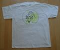
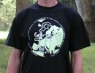
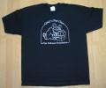
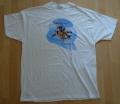

"A Gnu Head" Pin
{kind=link}
FSF Europe T-Shirts
Das Free Software Foundation Europe T-Shirt ist zum Preis von
DM 30,00 (EUR 15,00) erhältlich.
Der Gewinn i.H.v. DM 10,00 (EUR 5,00) fließt vollständig als
Spende an die FSFE.
|  | Lateinischer Aufdruck
Omnis enim res, quae dando non deficit, dum habetur et non datur, nondum habetur, quomodo habenda est. |
|
| Übersetzung
Denn jede Sache, die gegeben nicht verliert, während sie besessen und nicht gegeben wird, wird niemals besessen, auf welche Weise sie besessen werden soll. |
 |
{kind=link}
{kind=link}
{kind=link}
{kind=link}
Etwas verständlicher:
Jede Sache, die dadurch, daß man sie weitergibt, nicht verloren geht,
wird nicht auf richtige Weise besessen, wenn man sie nur besitzt,
aber nicht weitergibt.
Es geht natürlich um Freie Software. Dieser Spruch stammt von
Aurelius Augustinus, der sich bereits im vierten Jahrhundert für die
Freiheit der damaligen Software eingesetzt hat.
(Damals ging es konkret um die christliche Lehre. Augustinus wurde
übrigens später von den Vandalen umgebracht und noch später heilig
gesprochen.)
FSF T-Shirts
|  | GNU's Not Unix' in den Farben:
schwarz (S, M, XL, XXL) natur (sand) (S, M, L, XL, XXL) rot (XL, XXL) grün (XXL) |
|  | 'Dynamic Duo' in der Farbe: weiß (XL) |
| 'GNU Age' in den Farben: weiß (M, L, XL) natur (sand) (XXL) |
{kind=link}
{kind=link}
Preise (inkl. ges. MwSt.) zzgl. Versandkosten
| "A Gnu Head" Anstecker: inkl. DM 0,50 (EUR 0,25) Spende |
DM 3,00 (EUR 1,50) |
| FSF Europe T-Shirt: inkl. DM 10 (EUR 5,00) Spende |
DM 30,00 (EUR 15,00) |
| FSF T-Shirt: inkl. DM 10,00 (EUR 5,00) Spende |
DM 40,00 (EUR 20,00) |